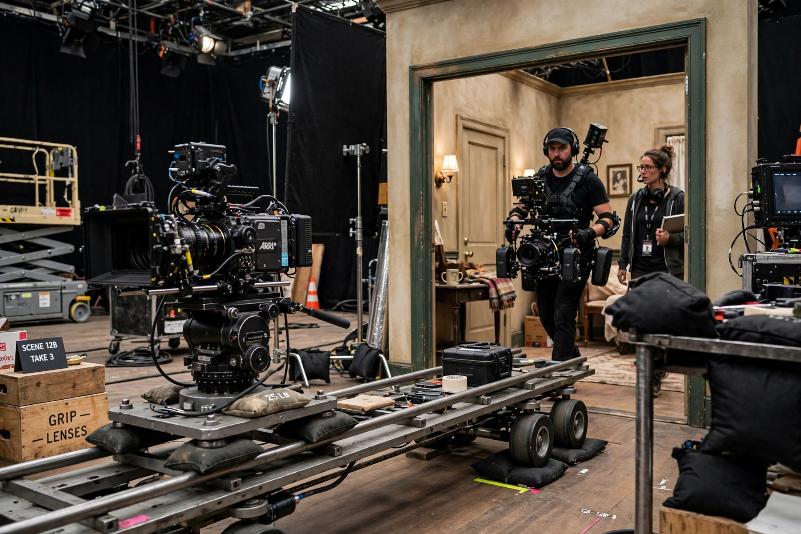

Long take
From Wikipedia, the free encyclopedia

A long take (also known as a long shot in the sense of duration, though that term more commonly refers to framing) is a continuous shot that lasts much longer than the typical editing pace allows. While most film shots last only a few seconds, a long take may run for several minutes without a cut, often involving complex camera choreography and precisely rehearsed performances. The technique is closely associated with real-time storytelling and with directors who favor mise-en-scène over montage.
Technique
Long takes require extensive rehearsal and precise blocking, because a single mistake late in the shot forces the entire sequence to be reset. Historically the length of a take was limited by film magazine capacity — a standard 1,000-foot magazine of 35 mm film holds about eleven minutes — but digital cameras have removed that constraint. Notable techniques include the use of Steadicams, gimbals, and elaborate crane or dolly moves to follow action through multiple spaces.
Notable examples
Famous long takes include the opening shot of Orson Welles's Touch of Evil (1958), the Copacabana tracking shot in Martin Scorsese's Goodfellas (1990), the battle scenes in Alfonso Cuarón's Children of Men (2006) and Gravity (2013), and entire features presented as apparent single takes, such as Alfred Hitchcock's Rope (1948), Alexander Sokurov's Russian Ark (2002), Alejandro G. Iñárritu's Birdman (2014), and Sam Mendes's 1917 (2019). Television has also embraced the technique, as in the extended tracking shots of True Detective and the single-take episodes of The Bear.